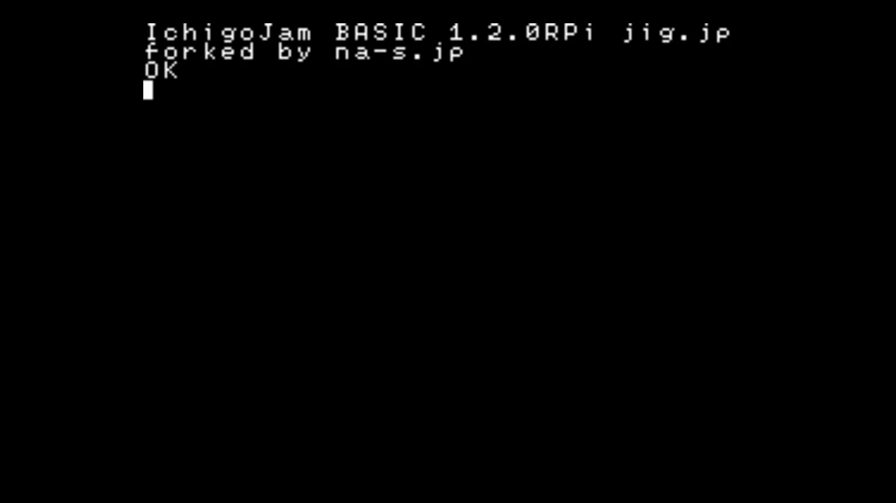

1. 利用条件
利用規約に同意の上、ご利用ください。第三者への配布には別途契約が必要となります。
2. 対応機種
基本的に、すべての Raspberry Pi で動作するように開発しています。
こちらで動作確認済の機種は下記です。
- Raspberry Pi 3 Model B+
- Raspberry Pi 3 Model B V1.2
- Raspberry Pi Zero W V1.1
- Raspberry Pi Zero V1.3
- Raspberry Pi 2 Model B V1.2
- Raspberry Pi Model B+ V1.2
- Raspberry Pi Model A+ V1.1
※ Zero、Zero W と Model A+ については 一部のキーボードで、入力の反応がよくない現象が報告されていますが、
それ以外は Pi 3, Pi 2 と同様にご利用いただけます。
3. ダウンロード
下記よりダウンロードできます。
インストール
パソコンなどを使い、Raspberry Pi で使用する microSDメモリーカード を FAT16 または FAT32 でフォーマットし、
readme.txt を含むディレクトリの中身をコピーします。
- 容量32GBまでのmicroSDメモリーカードを用意し、SDメモリカードフォーマッターを利用するとよいでしょう。
- 対応しているファイルシステムは FAT16 と FAT32 です。
- うまく動作しない場合は、Raspberry Pi と microSDメモリーカードの相性が良くない可能性があります。
[Working / Non-working SD cards]を参考に他のカードをお試しください。
アップデート
最新版への更新は下記の手順で行います。
※ ver1.2.5でEEPROMに対応するためSAVE,LOADコマンドの仕様を変更したため、アップデート時にfilesディレクトリ内のファイル名の調整が必要になる場合があります。詳しくは 「SAVE/LOADの出力先」 をご覧ください。
- パソコンなどを使い、microSDメモリーカード内のファイルを、任意の場所にコピーします。(バックアップ)
- ダウンロードページから、IchigoJam BASIC RPi の最新版をダウンロード・展開します。
- microSDメモリーカード内のファイルを､ダウンロード・展開して生成されたファイルで上書きします。
- filesディレクトリ, config.txt, keymap.txt をバックアップからmicroSDメモリーカードにコピー(復元)します。
4. 使い方
起動時のキーボード設定
microSDメモリーカード内の keymap.txt で起動時のキーボードの種類を設定できます。
| keymap.txt に記入するテキスト | キーボードの種類 |
|---|---|
| us | USキーボード |
| jp | JPキーボード |
※ キーボードの種類は起動後にKBDコマンドでも変更できます。(下記参照)
チュートリアル
I. IchigoJam BASIC を起動する
- 
-
- Raspberry Pi に microSDメモリーカードを挿入します。
- モニターとキーボードを接続します。
- USBケーブルなどを接続し、電源を入れます。
画面に左記のように表示されたら成功です!
II. 本体のLEDを点灯する

-
キーボードから LED1 と入力し [Enter]キーを押します。
Raspberry Pi 本体の Activity LED (緑色) が点灯したら成功です!
III. 本体のLEDを消灯する

-
キーボードから LED0 と入力し [Enter]キーを押します。
Raspberry Pi 本体の Activity LED (緑色) が消灯したら成功です!
IV. LEDをチカチカさせる

-
- キーボードから 10 LED1: WAIT30 と入力し [Enter]キーを押します。
- キーボードから 20 LED0: WAIT30 と入力し [Enter]キーを押します。
- キーボードから 30 GOTO10 と入力し [Enter]キーを押します。
- キーボードから RUN と入力し [Enter]キーを押します。
Raspberry Pi 本体の Activity LED (緑色)がチカチカしたら成功です!
停止させるときは [Esc]キーを押します。
5. オリジナル版との相違点
IchigoJam BASIC RPi は オリジナル版(LPC1114版)の 1.2.4(1.2b56)(※) を元に移植されています。
操作方法や利用可能なコマンドは基本的にオリジナル版と同じですが、下記の点が異なります。
オリジナル版のドキュメントはこちらです。
https://ichigojam.net/IchigoJam-1.2.html
※ ver1.2.5以降。ver1.2.4以前はLPC1114版の1.2.3をベースに移植。
未実装のキー操作
下記のキー操作はRPi版には実装されていません
| キー | オリジナル版の動作 |
|---|---|
| [Ctrl] + [Shift] | カナ入力モード切り替え([カタカナ]と同じ) |
| [Ctrl] + [Alt] | 挿入モード切り替え([Insert]と同じ) |
RPi版専用のキー操作
下記のキー操作はRPi版にだけ実装されています
| キー | RPi版の動作 |
|---|---|
| [Ctrl] + [Shift] + [K] | カナ入力モード切り替え([カタカナ]と同じ) |
| [Ctrl] + [Alt] + [I] | 挿入モード切り替え([Insert]と同じ) |
未実装のコマンド
下記のコマンドはRPi版には実装されていません
| コマンド | オリジナル版の動作 | RPi版の動作 |
|---|---|---|
| SWITCH | ディスプレイの切り替え | なにもしない |
| SLEEP | システムの休止(ボタン押下でLRUN0を実行して復帰) | なにもしない |
| ANA | 外部入力の電圧を数値で返す | 常に0を返す |
RPi版専用のコマンド
下記のコマンドはRPi版にだけ実装されています(※1)
| コマンド | RPi版の動作 | 使用例 |
|---|---|---|
| KBD | キーボードのキーマップの切り替え(※2) |
KBD 0 'USキーボードに切り替え KBD 1 'JPキーボードに切り替え |
| IoT.IN |
sakura.io から I2C で数値を受信する
|
?IoT.IN() '受信した数値を表示 |
| IoT.OUT |
sakura.io に I2C で数値を送信する
|
IoT.OUT 111 '111を送信 |
※1 IoT.INとIoT.OUTは、β版でLPC1114版にも実装されています。
※2 ver1.2.5以降、KBDコマンドで keymap.txt にも設定が保存されます。
※ LANG が返す数値とKBDで設定する数値は違うものです。
LANG は使用中のIchigoJamでカナ入力を有効にしたとき表示されるフォントの言語の番号を返します。
(LPC1114版 1:日本語, 2:モンゴル語, 3:ベトナム語)
SAVE/LOADの入出力先
SAVE, LOAD コマンドによるプログラムの保存先は下記のようになります。
ver1.2.5で EEPROMに対応するため仕様を変更しました。
ver1.2.4以前からver1.2.5以降にアップデートするとき、
作成済みのプログラムを引き継ぐには microSDメモリーカードの files ディレクトリ内のファイル名を調整してください。
| microSDメモリーカード(filesディレクトリ内) | EEPROM | |
|---|---|---|
| ver1.2.4以前 | 0 ～ 3, 100 ～ 227 (*.bin) | なし |
| ver1.2.5以降 | 0 ～ 99 (*.bin) | 100 ～ 227 |
その他
その他、下記の相違点があります。
- キーボードを接続せずに電源投入すると、FILE0 を自動実行(LRUN0)します
- PWM は PWM3 と PWM4 のみが使えます
- IN3(OUT10)も OUT10,-2 でプルアップ入力になります
- LED と OUT7 は連動しません
- WAIT の省電力モードには対応していません
- パラメータなしの FILES コマンドで FILES20 相当の動作をします(ver1.2.5以降)
- VIDEO0 のクロックダウンには対応していません(ver1.2.5以降)
- USR コマンドは、Pi/Pi Zero系 では Thumb命令セット、Pi 2/Pi 3系では Thumb2命令セットに対応しています。(ver1.2.5以降)
6. IO系コマンドと物理PINの対応
IN/OUT/PWM
IN/OUT/PWM コマンドで実際に電流が入出力される物理PINは下記のようになります。
| 物理PIN | 入力 | 出力 | PWM | 初期状態 |
|---|---|---|---|---|
| 15 | IN1 | (OUT8) | 入力(プルアップ) | |
| 13 | IN2 | (OUT9) | 入力(オープン) | |
| 11 | IN3 | (OUT10) | 入力(オープン) | |
| 7 | IN4 | (OUT11) | 入力(プルアップ) | |
| 35 | IN9 | 入力(オープン,固定) | ||
| 37 | (IN5) | OUT1 | 出力 | |
| 36 | (IN6) | OUT2 | 出力 | |
| 33 | (IN7) | OUT3 | PWM3 | 出力 |
| 32 | (IN8) | OUT4 | PWM4 | 出力 |
| 38 | (IN10) | OUT5 | 出力 | |
| 40 | (IN11) | OUT6 | 出力 | |
| 26 | OUT7 | 出力(固定) |
I2C
I2CW/I2CR コマンドで実際に電気信号が入出力される物理PINは下記のようになります。
| 物理PIN | 機能 |
|---|---|
| 3 | SDA |
| 5 | SCL |
UART
UART接続時に実際に電気信号が入出力される物理PINは下記のようになります。
| 物理PIN | 機能 |
|---|---|
| 8 | TXD |
| 10 | RXD |
BEEP/PLAY
BEEP/PLAY コマンドで実際に電気信号が入出力される物理PINは下記のようになります。
| 物理PIN | 機能 |
|---|---|
| 29 | SND |
ピン説明図

7. 既知の課題と対応予定
既知の課題
- [issue 1005] Zero、Zero W、Model A+ で一部のキーボードの反応がよくない
- [issue 1008] 存在しないアドレスへのアクセスなど、I2CWが非ゼロ(失敗)を返すべきところでゼロ(成功)を返すことがある
今後の対応予定
- キー入力処理の改善(issue 1005 に関連)
解決済みの課題
- [issue 1009] Raspberry Pi 3 Model B+ で LED コマンドが動作しない
- [issue 1007] カーソルが点滅しない
- [issue 1006] TICKの値と画面のリフレッシュ回数が同期していない
- [issue 1004] CLS,SCROLL,POKE,COPY,CLP による画面の変更が次のPRINT処理まで反映されない
- [issue 1003] 一部のキーボードでオートリピートが効かない
- [issue 1002] 一部のキーボードでShift,Ctrl,Altが効かない
- [issue 1001] 一部のキーボードでテンキーのHome,End,PageUp,PageDown,Insが効かない
更新履歴
- [2018/06/08] ver1.2.6
-
- [issue 1009] を解決しました
- [2018/06/01] ver1.2.5
-
- sakura.io に対応(IoT.IN, IoT.OUTコマンド)
- ディスプレイ関連の機能に対応(VIDEOコマンド)
- サウンド関連の機能に対応(BEEP, PLAY, TEMPO, SOUNDコマンド)
- マシン語関連の機能に対応(USRコマンド)
- EEPROMに対応し、プログラムの保存先を変更(SAVE, LOADコマンド)
- パラメータなしの FILESコマンドの動作を変更(FILES3相当からFILES20相当に)
- KBDコマンドで keymap.txt にも設定を保存するように変更
- フォントのアンチエイリアスを無効化(config.txt に scaling_kernel=8 を追加)
- LPC1114版の1.2.4(1.2b56)での仕様変更を取り込み
- FILES0,0でファイル0のみ表示するように変更
- エラーメッセージの抑制をOK0からOK2に変更
- コマンドの空白を完全に無視するように変更
- BPSの第二パラメータで I2C の通信速度を設定可能に ex)BPS0,100 '100kHzに設定
- [右Alt] + [K] によるカナ入力切り替えを廃止
- [無変換], [左Alt], [右Alt] の動作を統一
- [Alt] + [W] で [Alt] + [0] と同じ動作をするように変更
- [Alt] + [X] で [Alt] + [1] と同じ動作をするように変更
- [Alt] + [Y] で [Alt] + [2] と同じ動作をするように変更
- [Alt] + [Z] で [Alt] + [3] と同じ動作をするように変更
- [2018/04/24] ver1.2.4.fw-5db8e4e
-
- ファームウエアを Raspberry Pi 3 Model B+ に対応したものに更新しました
- [2017/12/25] ver1.2.4
-
- [issue 1007] を解決しました
- [issue 1006] を解決しました
- 画面描画処理を改善しました(issue 1006, 1007 に関連)
- [2017/12/09] ver1.2.3
-
- [issue 1004] を解決しました
- ver1.2.2
-
- [issue 1003] を解決しました
- [issue 1002] を解決しました
- [issue 1001] を解決しました
8. よくある質問と回答
- 質問. 「Raspberry Pi 公式 7インチ Touchscreen Display」を使用時、画面が上下反転します。
- 回答. config.txt に lcd_rotate=2 を追加することにより、反転させることができます。Raspbianと同じ仕様です。
- 質問. 本体にボタンがありませんが、電源投入時にプログラムを自動起動するにはどうしますか。
- 回答. キーボードを接続せずに起動するとFILE0を実行(LRUN0)します。
- 質問. ディスプレイの出力に、コンポジットビデオ(RCA端子)は使用できますか。
- 回答. 使用できます。Raspbian 同様、3.5mm ジャックから信号が出力されます。音は物理PIN29(SND)から出力します。
- 質問. 日本語キーボードを使用したいです。
- 回答. KBDコマンドで切り替えることができます。KBD 1 をお試しください。
- 質問. USキーボードを使用したいです。
- 回答. KBDコマンドで切り替えることができます。KBD 0 をお試しください。
- 質問. アナログ入力に対応していますか。
- 回答. 対応していません。I2Cなどを経由して利用できるADコンバータ等、外部モジュールをご利用ください。
9. サポート
お問い合わせは下記にてうけたまわっております。
株式会社ナチュラルスタイル
IchigoJam BASIC RPi 担当
(support@na-s.jp)
また、技術的な情報の共有や質問等については下記のFacebookグループもご活用ください。
https://www.facebook.com/groups/ichigojam/